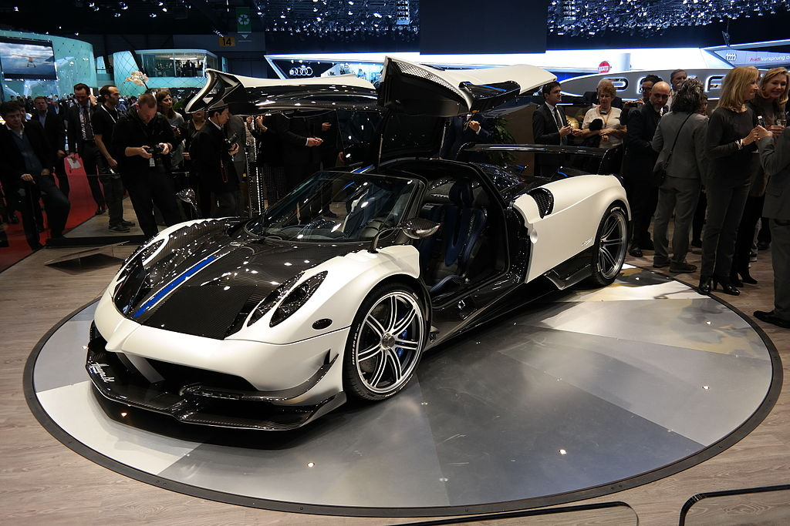

Está equipado con un motor V12 a 60º Mercedes-Benz M158 biturbo de 5980 cm³ (6 L; 364,9 plg³) con un diámetro x carrera de 82,6 x 93 mm (3,25 x 3,66 pulgadas),1 el cual es fabricado a mano y desarrollado especialmente por la división AMG,9 capaz de proporcionarle una potencia de 730 CV (720 HP; 537 kW) a las 5800 rpm y 1000 N·m (738 lb·pie) a las 2250-4500 rpm de par máximo. Fue diseñado a petición de Pagani para reducir el retraso del turbo y mejorar la respuesta, realizado con turbos más pequeños, una configuración diferente del intercooler y ajustes de la unidad de control de motor (ECU) reprogramados. Su creador, Horacio Pagani, ha confesado que él hubiera preferido un motor atmosférico, pero que las duras restricciones medioambientales de la Unión Europea obligaron a pensar en otro tipo de soluciones que permitieran homologar el vehículo.
Al igual que muchos coches de alto rendimiento, el Huayra utiliza un sistema de lubricación por cárter seco, lo cual tiene varios beneficios clave, incluyendo la garantía de flujo de aceite, incluso cuando el coche está sujeto a la aceleración lateral extrema, la prevención de oleada de aceite que permite que el motor funcione más eficientemente, mientras que la falta de un colector de aceite permite montar el motor más abajo, para así reducir el centro de gravedad del coche y mejorar el manejo. Su consumo de combustible es de 23,5 L/100 km (4,3 km/L; 10,0 mpgAm) en la ciudad y 16,8 L/100 km (6 km/L; 14,0 mpgAm) en la carretera, según una prueba de la EPA. Sus emisiones de CO2 son de 343 g (12,1 onzas)/km.1
Un intercambiador de calor de agua/aceite reduce los tiempos de calentamiento del motor en días fríos y ayuda a mantener una temperatura estable para refrigerantes y lubricantes. Para minimizar el uso de tuberías, accesorios y el peso total del vehículo, el tanque de expansión se monta directamente en el motor. Las aletas intercooler actúan como un circuito de tanque de expansión a bajas temperaturas.
Frenos
El coche está equipado con pinzas de freno (calipers), rotores y pastillas Brembo, que tienen cuatro pistones en la parte delantera y cuatro en la parte trasera. Los rotores son perforados con un diámetro de 380 mm (15,0 pulgadas) y 34 mm (1,3 pulgadas) de espesor.10
Transmisión
Utiliza una transmisión manual automatizada de siete velocidades con un único embrague de disco. La elección de no utilizar una caja de cambios de doble embrague en baño de aceite fue debido a que se incrementaría el peso en más de 70 kg (154 libras), echando por tierra la posible mejora en rendimiento. Como resultado, la transmisión pesa solamente 96 kg (212 libras).11
Aerodinámica
En el Festival de la Velocidad de Goodwood de 2014
Es completamente diferente a su predecesor el Zonda, ya que incorpora la aerodinámica activa. Es capaz de cambiar la altura del frente desde el suelo y de operar independientemente cuatro aletas colocadas en la parte delantera y trasera del coche. El comportamiento de las aletas es manejado por una unidad de control dedicada que se alimenta la información de sistemas, tales como el sistema de frenos antibloqueo (ABS) y la unidad de control de motor, que pasan información sobre la velocidad del coche, velocidad de guiñada, aceleración lateral, ángulo de dirección y posición del acelerador.12 Esto tiene la intención de alcanzar el mínimo coeficiente de arrastre o la máxima carga aerodinámica, dependiendo de la situación.11
El diseñador del Huayra, Horacio Pagani, afirma que tiene un variable coeficiente de arrastre de entre 0.31 y 0.37.13 El sistema también evita el exceso de balanceo de la carrocería en las esquinas, levantando el "interior" de las aletas, por ejemplo: hacia el lado izquierdo en una esquina yendo hacia la izquierda y viceversa, aumentando la carga aerodinámica en ese lado del coche.
Las aletas traseras también actúan como un freno de aire. En el caso de un frenado fuerte, tanto la suspensión delantera como las dos aletas traseras se elevan para contrarrestar la transferencia de peso a las ruedas delanteras y mantener el coche entero estable, por ejemplo, al entrar en una esquina.12 El aire del radiador es extraído a través de un arco en el cofre en un ángulo que está diseñado para no afectar la línea de corriente alrededor de la carrocería. Las entradas de aire laterales detrás de las ruedas delanteras, crean una zona de baja presión, lo que da lugar a la carga aerodinámica. Dispone de planos aerodinámicos activos con dos en la parte delantera y dos traseros.